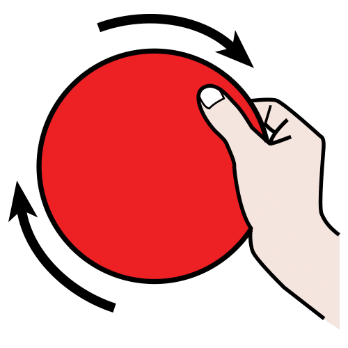
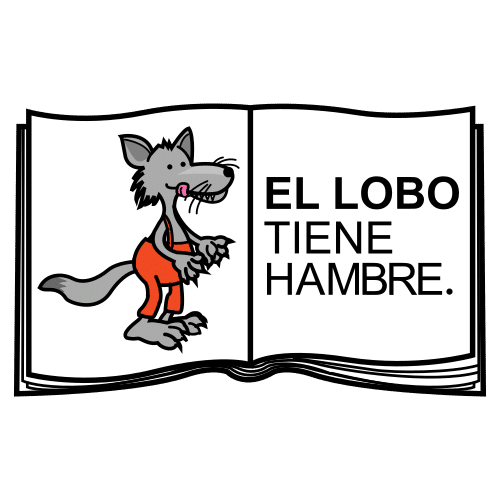
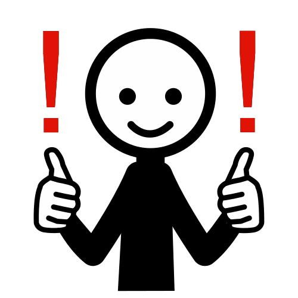

Para Audición y Lenguaje · Con pictogramas
Pack de Audición
y Lenguaje
La tabla de los sonidos por edades, un registro de articulación, conciencia fonológica por niveles, y lotos y
ruletas para la s, la z, la r, la rr y los grupos.
Pictogramas: Sergio Palao. ARASAAC (Gobierno de Aragón). CC BY-NC-SA.
Licencia CC BY-NC-SA 4.0
ideducando.es
6 lotos6 ruletascon pictogramas
Guía para el maestro o la maestra · 1 de 2
Cómo usar el pack
Este pack es para las sesiones de Audición y Lenguaje (AL) con alumnado de 3 a 8 años. Con él puedes ver cómo dice
cada sonido y practicar los que le cuestan. También trae juegos de conciencia fonológica para preparar la lectura.
Qué hay, en el orden de las páginas
-
 La tabla de los sonidosPágina 5A qué edad suelen salir los sonidos. Sirve para situarse y
no sirve para diagnosticar.
La tabla de los sonidosPágina 5A qué edad suelen salir los sonidos. Sirve para situarse y
no sirve para diagnosticar.
-
 El registro de articulaciónPáginas 6 y 7Cada sonido al principio, en medio y al final de
la palabra, los grupos y los diptongos. Con él eliges qué trabajar.
El registro de articulaciónPáginas 6 y 7Cada sonido al principio, en medio y al final de
la palabra, los grupos y los diptongos. Con él eliges qué trabajar.
-
 La conciencia fonológicaPáginas 8 a 10Tres niveles: las sílabas, el primer sonido y, al
final, los sonidos con letras. Va a la vez que lo demás.
La conciencia fonológicaPáginas 8 a 10Tres niveles: las sílabas, el primer sonido y, al
final, los sonidos con letras. Va a la vez que lo demás.
-

Los lotos y las ruletasPáginas 11 a 19Para practicar la s, la z, la r suave, la rr y los
grupos con l y con r: primero en palabras y después en frases.
El registro, paso a paso
- Pásalo en un rato tranquilo, en 10 o 15 minutos. Si se cansa, sigue otro día.
-
Primero, que nombre un dibujo o un objeto de cada palabra: así habla como siempre. Si no sale, di tú la palabra y
que la repita. En la cabecera, marca si ha nombrado o ha repetido.
-
Fíjate solo en el sonido de la fila y anótalo con el código: ✓ si lo dice bien, O si lo omite, S si lo cambia por
otro (escribe cuál), D si lo distorsiona y A si añade un sonido.
-
Muchas palabras del registro salen en los lotos, las ruletas y las fichas de conciencia fonológica: sus dibujos te
sirven para preguntarlas. Para las demás, usa objetos o dibujos.
Para elegir qué trabajar
Te proponemos empezar por uno o dos sonidos: los que ya deberían salir por su edad y los que más dificultan que se
le entienda. Vuelve a pasar el registro cada trimestre.
Si nombra o si repite
Al nombrar un dibujo se ve mejor cómo habla de verdad, sobre todo en las primeras edades. Con los años, nombrar y
repetir dan casi lo mismo (Bosch, 1983).
De dónde sale. El orden de los niveles de conciencia fonológica sigue a Anthony y Francis (2005) y a
Míguez-Álvarez y otros (2022). Las fuentes completas están en la página 21. Lo que no lleva fuente es propuesta de
IdEducando.
Guía para el maestro o la maestra · 2 de 2
Cómo se juega y cuánto tiempo
El loto
Con un peque: saca una tarjeta, dice su nombre y la pone encima de su dibujo, hasta tapar el
tablero.
En grupo de 2 a 4: cada peque, con el tablero de su sonido. Las tarjetas, mezcladas en una bolsa:
quien saca una la nombra y se la da a quien tiene ese dibujo.
La ruleta
Gira la flecha y di la palabra a la que apunta. Cuando la palabra ya sale bien, dila en una frase: «Tengo un sofá»,
«Veo una cebra».
En grupo, un punto por cada frase: así repite su sonido muchas veces mientras juega.
Del sonido a la conversación
Sube un peldaño cuando lo dice bien casi siempre en el anterior. Si se atasca, baja uno.
- 1. SonidoSolo: «sss».
- 2. Sílabassa, se, si, so, su.
- 3. PalabrasEl loto: «sopa».
- 4. Frase con ayuda«Es una sopa».
- 5. Frase suyaLa ruleta: inventa una frase.
- 6. ConversaciónContar un cuento o qué hizo ayer.
Si no le sale: di tú la palabra bien, con calma, sin pedirle que la repita: «¡Sí, un ratón!». Que la
oiga muchas veces y que vea tu boca al decirla.
Sesiones cortas
Bastan 10 o 15 minutos de juego en cada sesión, con uno o dos sonidos a la vez. En conciencia fonológica, los programas
de 5 a 18 horas en total tuvieron más efecto que los más largos (Ehri y otros, 2001): 15 minutos tres veces por semana
durante tres meses suman 9 horas.
La conciencia fonológica, por niveles
Sigue el orden de las fichas: sílabas, primer sonido y, al final, sonidos con letras. La rima puede esperar: a quienes
aún no leían les costó más que contar sílabas (De la Calle y otros, 2016). Mejor una o dos habilidades a la vez y en
grupos pequeños (Ehri y otros, 2001).
Cuándo consultar. Si un sonido sigue sin salir mucho después de la edad de la tabla, si cuesta
entenderle o si dudas de cómo oye, habla con la familia y con el equipo de orientación. La tabla y el registro no
sirven para diagnosticar.
Seseo, ceceo y otras formas de hablar. Donde se habla así, el seseo, el ceceo, la s aspirada o los
sonidos finales que se pierden no son errores: no los anotes como errores ni los trabajes. Lo que se espera
depende de cómo se habla en cada sitio (McLeod y Crowe, 2018).
Tabla orientativa
¿A qué edad suelen salir los sonidos?
Esta tabla no sirve para diagnosticar. Es una guía para situarse. Cada peque tiene su ritmo, y que
un sonido aún no salga a una edad no basta para decir que hay un trastorno.
La edad es la de Bosch (1983), que estudió a 293 niños y niñas de habla castellana de 3 a 7 años: a esa
edad, 9 de cada 10 dicen bien el sonido. Entre paréntesis, el margen cuando otras fuentes dan otra edad. Entre barras,
el sonido: /θ/ es el de la z de zapato y /x/, el de la j.
| Sonidos y palabras de ejemplo |
Edad |
Margen |
34567
|
Edad de Bosch
Lo mismo en las edades mayores
Margen de otras fuentes
- Los datos de Bosch tienen más de 40 años y salen de un solo estudio.
-
Donde se habla así, el seseo, el ceceo, la s aspirada («loh perroh») o los sonidos finales que se pierden
(«comé» por «comer») no son errores.
-
Una revisión de estudios en 27 lenguas vio que a los 5 años salen casi todas las consonantes. En castellano, la s
y la rr están entre las últimas, de los 5 a los 7 años (McLeod y Crowe, 2018).
De dónde sale. Bosch (1983), figura 4, y McLeod y Crowe (2018). Fuentes completas en la página 21.
Registro de articulación · 1 de 2
Los sonidos, uno a uno
Nombre
Edad
Fecha
Cómo:nombra dibujosrepitelas dos
Pasa el registro:
| Sonido |
Al principio |
En medio |
Al final |
Notas |
«No hay»: en castellano no hay palabras de uso diario con ese sonido en esa posición (la j de «reloj»
muchas veces no se pronuncia). En casi toda España, la y y la ll suenan igual.
Registro de articulación · 2 de 2
Grupos, diptongos y resumen
Resumen Para el informe y para la familia
Lo dice bien:
Para trabajar primero (uno o dos sonidos):
¿Se le entiende al hablar?Casi siempreA vecesCasi nunca
Cómo se habla en su entorno (seseo, ceceo, s aspirada…):
Próxima revisión:
De dónde sale. Las palabras son una selección propia de IdEducando: de uso diario y fáciles de
dibujar. No copian las listas de ninguna prueba publicada. Los grupos, los diptongos y los sonidos con l o r delante de
otra consonante son los de la tabla de la página 5.
Conciencia fonológica · Nivel 1
Las sílabas
Para el adulto: jugad en voz alta y sin prisa. Todo va con dibujos: no hace falta saber leer.
1Une las sílabas Unir es más fácil que separar: por eso va primero.
Di las sílabas despacio, con un segundo entre una y otra. El peque une la palabra y señala su dibujo.
2¿Cuántas palmadas?
Decid la palabra con una palmada por sílaba. Que pinte un círculo por palmada o que ponga una ficha en cada uno.
De dónde sale. En castellano, darse cuenta de las sílabas es lo que más se relaciona con la lectura
(Míguez-Álvarez y otros, 2022). Unir llega antes que separar (Anthony y Francis, 2005).
Conciencia fonológica · Nivel 2
El primer sonido
Para el adulto: di el sonido, no el nombre de la letra: «mmm», no «eme». Empieza por sonidos que se
pueden alargar, como la s, la m, la f, la l o la n.
1Alarga el primer sonido
2¿Cuál empieza igual?
Di el nombre del dibujo de color. Después, busca en su fila el que empieza con el mismo sonido.
De dónde sale. Primero se notan las partes grandes de la palabra, como la sílaba, y después las
pequeñas, como el primer sonido (Anthony y Francis, 2005). En castellano, la rima no tiene por qué ir antes: a quienes
aún no leían les costó más que aislar una sílaba o un sonido (De la Calle y otros, 2016).
Conciencia fonológica · Nivel 3
Sonidos y letras
Para el adulto: este nivel va con letras. Señala cada letra y di su sonido. Primero se unen los
sonidos y, cuando eso sale, se separan.
1Une los sonidos
Di los sonidos seguidos, cada vez más deprisa: «sss-ooo-lll»… ¡sol! Después, el peque busca su dibujo en el recuadro.
2Separa los sonidos
Di la palabra despacio. Pon una ficha en una caja por cada sonido. Después, escribe su letra en la raya de debajo.
De dónde sale. Trabajar los sonidos con letras funcionó mejor que sin letras (Ehri y otros, 2001).
Estas cajas, una por sonido, se llaman cajas de Elkonin.
Nota para las familias
Jugamos con los sonidos
En las clases de Audición y Lenguaje (AL), vuestro peque aprende a decir bien los sonidos. También juega con las
palabras. Así se prepara para leer.
En casa podéis ayudar
-
Jugad con las palabras 5 minutos al día. Mejor en un rato tranquilo.
-
Si dice mal una palabra, no le pidáis que la repita. Decidla vosotros bien, con calma: «Sí, es un ratón».
-
Hablad cara a cara. Así ve cómo movéis la boca.
-
Dad una palmada por cada trozo de la palabra: «ma-ri-po-sa». También con su nombre.
-

Leed cuentos juntos. Decid el nombre de lo que veis en los dibujos.
-

Celebrad que lo intenta, aunque no le salga.
Recordad
Cada peque tiene su ritmo. Es mejor no comparar con hermanos ni con otros peques.
Cada sitio habla a su manera. Si en casa decís «lah casah», está bien que vuestro peque lo diga igual.
Si tenéis dudas, preguntad al maestro o a la maestra de AL.
Esta semana jugamos con
El sonido:
Las palabras:
Fuentes y créditos
De dónde sale este material
Pack de Audición y Lenguaje: sonidos, conciencia fonológica, lotos y ruletas. Equipo IdEducando,
noviembre de 2026. Ficha y novedades:
ideducando.es/material-gratuito/pack-audicion-lenguaje
La edad de los sonidos
-
Bosch, L. (1983). El desarrollo fonológico infantil: una prueba para su evaluación. Anuario de Psicología,
28, 85-114. hdl.handle.net/2445/121447. La tabla sale de su figura 4.
-
McLeod, S. y Crowe, K. (2018). Children's consonant acquisition in 27 languages: A cross-linguistic review.
American Journal of Speech-Language Pathology, 27(4), 1546-1571. DOI: 10.1044/2018_AJSLP-17-0100.
Márgenes de la s y la rr; cada sitio habla a su manera.
La conciencia fonológica
-
Anthony, J. L. y Francis, D. J. (2005). Development of phonological awareness. Current Directions in
Psychological Science, 14(5), 255-259. DOI: 10.1111/j.0963-7214.2005.00376.x.
De las partes grandes a las pequeñas; unir antes que separar.
-
De la Calle, A. M., Aguilar, M. y Navarro, J. I. (2016). Desarrollo evolutivo de la conciencia fonológica: ¿Cómo
se relaciona con la competencia lectora posterior? Revista de Investigación en Logopedia, 6(1), 22-41.
DOI: 10.5209/rlog.58553. La rima, la tarea más difícil antes de leer.
-
Ehri, L. C., Nunes, S. R., Willows, D. M., Schuster, B. V., Yaghoub-Zadeh, Z. y Shanahan, T. (2001). Phonemic
awareness instruction helps children learn to read: Evidence from the National Reading Panel's meta-analysis.
Reading Research Quarterly, 36(3), 250-287. DOI: 10.1598/RRQ.36.3.2.
Con letras, una o dos habilidades, en grupo pequeño, de 5 a 18 horas.
-
Míguez-Álvarez, C., Cuevas-Alonso, M. y Saavedra, Á. (2022). Relationships between phonological awareness and
reading in Spanish: A meta-analysis. Language Learning, 72(1), 113-157. DOI: 10.1111/lang.12471.
En castellano, la sílaba es lo que más se relaciona con la lectura.
Cómo está hecho
Las palabras son una selección propia de IdEducando, de uso diario y fáciles de dibujar. La nota para las familias
sigue las pautas de lectura fácil de la norma UNE 153101:2018 EX; aún no la hemos validado con personas lectoras.
Pictogramas, dibujos y licencia
Los pictogramas son de ARASAAC, el Centro Aragonés para la Comunicación Aumentativa y Alternativa. Su licencia pide
citar este texto: «Los símbolos pictográficos utilizados son propiedad del Gobierno de Aragón y han sido creados por
Sergio Palao para ARASAAC (https://arasaac.org), que los distribuye bajo Licencia Creative Commons BY-NC-SA.» Si
adaptas el material, mantén la cita.
Con pictogramas de ARASAAC, este material no se puede vender: es gratis y lo será siempre. Las ruletas, las flechas,
los tableros y la línea de las edades son de IdEducando. Licencia CC BY-NC-SA 4.0: puedes copiarlo y adaptarlo
citando a IdEducando, sin fines comerciales y con la misma licencia.
Para seguir, gratis en ideducando.es